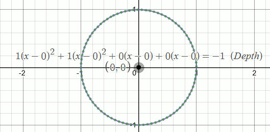
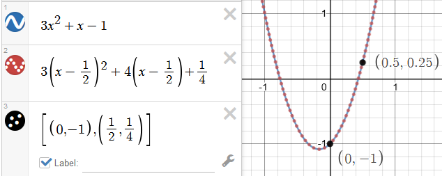

In this section, because the primary purpose of this article is to show a new method, I'm simply including how translation is currently used to solve problems. It is assumed that you are already familiar with translating functions horizontally and vertically (by convention: (x-h) and k).
Root-finding equations solve a general case having a special point at the origin (\(\frac{-b}{2a}\) for quadratics, and \(\frac{-b}{3a}\) for cubics), and then translate (shift) the answers over to your position. That's what's happening in the quadratic equation: \[x = {-b \pm \sqrt{b^2-4ac} \over 2a}\] The first part: (\(\frac{-b}{2a}\)) is the automatic shift for your equation, while the second part: \(\frac{\sqrt{b^{2}-4ac}}{2a}\) is the general solution about (0,0).
Translation can make this simpler by zeroing the second term. For example:
|
|
The vertex is centered on the origin and solved more simply -- because \(b=0\) -- but this means the quadratic equation can't shift the answer back; you have to remember this step.
By "depression" I mean "forcing a term to zero" while having an equivalent polynomial (this often makes some tricks work better). The next part’s example shows an equivalent polynomial having a zero second term.
Completing the square produces an equivalent quadratic in the same place (no translation). The quadratic equation then solves and translates it in-place for you.
| \(x^{2}-3x+2\) | • Original |
| \(x^{2}-\frac{1}{4}\) | • Shifted, from above (must undo shift) |
| \(\left(x-\frac{3}{2}\right)^{2}-\frac{1}{4}\) | • Squares-completed (expand and solve quadratically) |
Notice the similarity in the last two forms. The former undergoes temporary translation, while the latter hasn't moved from its original position. The graph staying in the same location turns out to be an important intuition.
Tap on [Main Content] below to expand that tab.
Back to repository
(A refresher on translation as it's currently used is in the collapsed section above)
A new way to translate graphs in-place using Pascal's Triangle is shown. This reveals surprising new intuitions about the locator and casts new light on some long-held assumptions. For example, the circle's locator does not have to remain in the center...and the constant is not its radius\(^2\).

A polynomial’s locator is (for many) "the handle by which we drag functions around" and it represents the graph's translation. In this equation:
\(\left(x-h\right)^{2}+\left(x-h\right)+k\)
The graph drags around with -- and always goes through -- the point \((h,k)\) at \(x=0\). We could therefore call this the graph's "origin", around which the output is drawn. A problem with that intuition is that during term updates the locator's behavior and any deeper meanings get lost in translation. Further, the standard locator for a circle isn't on the graph at all (it just sits in the center), so the locator really does just look like a dragging handle.
In the optional intro I noted that a "completed squares" graph stays in exactly the same place as the original. It means that only the locator has moved on a graph. In a picture, it looks something like this:

Equivalent outputs, different locators.
Moving the locator but keeping the graph still means the coefficients have to change. Above, they changed from \([3, 1, -1]\) to \([3, 4, 1/4]\). At first this doesn't seem very significant, but after a lot of samples you might find that there's a pattern to these changes.
These changes come from Pascal's Triangle. We start by pulling out its diagonals through the quadratic row: \(({\color{red}1} / {\color{green}2\;1} / {\color{blue}1\;1\;1})\)
Then given the quadratic: \(a_{1}x^{2}+b_{1}x+c_{1}\) and a desired locator position at \(h\):
| \(a_{2}\) = | \({\color{red}1}\ \cdot\ a_{1}\) | ||||
| \(b_{2}\) = | \({\color{green}2}\ \cdot\ a_{1}h\) | + | \({\color{green}1}\cdot b_{1}\) | ||
| \(c_{2}\) = | \({\color{blue}1}\ \cdot\ a_{1}h^{2}\) | + | \({\color{blue}1}\cdot b_{1}h\) | + | \({\color{blue}1}\cdot c_{1}\) |
And the graph of \(a_{2}\left(x-h\right)^{2}+b_{2}\left(x-h\right)+c_{2}\)
is equivalent, with the locator moved to \((h, c_{2})\)
| \(a_{2}\) = | \({\color{red}1}\ \cdot\ a_{1}\) | ||||||
| \(b_{2}\) = | \({\color{orange}3}\ \cdot\ a_{1}h\) | + | \({\color{orange}1}\cdot b_{1}\) | ||||
| \(c_{2}\) = | \({\color{green}3}\ \cdot\ a_{1}h^{2}\) | + | \({\color{green}2}\cdot b_{1}h\) | + | \({\color{green}1}\cdot c_{1}\) | ||
| \(d_{2}\) = | \({\color{blue}1}\ \cdot\ a_{1}h^{3}\) | + | \({\color{blue}1}\cdot b_{1}h^{2}\) | + | \({\color{blue}1}\cdot c_{1}h\) | + | \({\color{blue}1}\cdot d_{1}\) |
If I were to give you a ready-made Desmos basic locator move sample (link), you'd have an opportunity to see that quite a lot changes about graphs once you can explore them from the locator's perspective...especially compared to translations, completing squares, root solving, and so on.
I will be adding more content (and, in better formats) soon, but to give you a couple ideas right now, here are a couple of observations I've made:
| if h is on the... | Zero'd coeff | relationship |
| inflection point | b | linear root |
| extrema | c | quadratic roots |
| root | d | cubic roots |
| \(a\left(x-h\right)^{3}+b\left(x-h\right)^{2}+c\left(x-h\right)+d\) | Original |
| \(b\left(x-h\right)^{2}+c\left(x-h\right)+d\) | Tangent conic (ref: NJ Wildberger) (YouTube) |
| \(c\left(x-h\right)+d\) | Tangent Line |
| \(d\) | Tangent...point? |
Research that's coming:
It will take a little time before I can document how multidimensional locator moves work, but if you want to look ahead of time (and...why not seek new puzzles?) you can load the Desmos file for the first circle gif here (link).
Note, I've updated my methods since that demo was written; 3D updates and more will come.
{kind=link}
{kind=link}
{kind=link}
{kind=link}